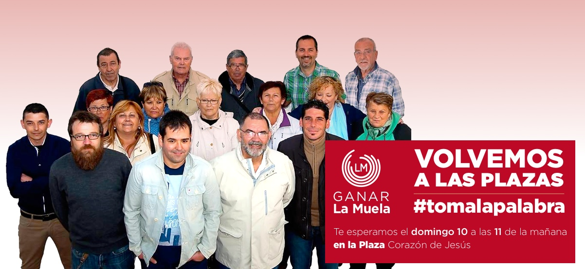
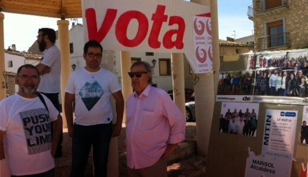
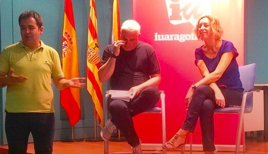

Participación Ciudadana
GANAR LA MUELA se compromete a la participación ciudadana y democracia en todas sus esferas y niveles de decisión.
Actualidad

12 de Mayo de 2015
Calendario de campaña organizado para los próximos días
- Día 13, de 16:30 a 20:00h - mesa informativa
- Día 15, a la 17:30h - Presentación de Ganar La Muela en el Salón de actos del Ayuntamiento
- Día 17, a las 11:00h y a las 14:00h - Mesas informativas en la Plaza del Corazon de Jesús
- Dia 19, a las 16:30h y a las 20:00h - Mesas informativas Frente a La Tahona
- Día 22, a las 18:00h y a las 21:00h - Mesas informativas y fin de campaña en la Plaza del Corazon de Jesús

11 de Mayo de 2015
La candidata a la presidencia de Aragón Patricia Luquin visita La Muela
Ayer tuvimos una vista de postín, Patricia Luquin. La recibimos como Diputada de las Cortes de Aragón, por Izquierda Unida y también como candidata a la Presidencia de dichas Cortes Aragonesas para el próximo periodo electivo. Sabía perfectamente a donde venía y con quien se iba a encontrar....